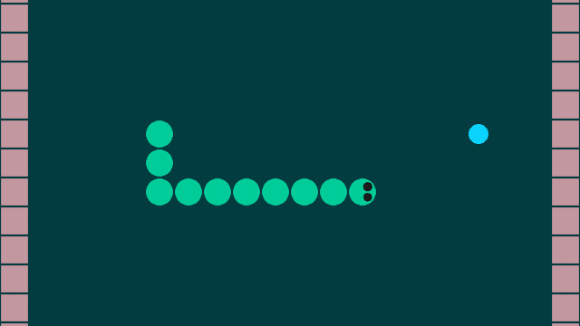
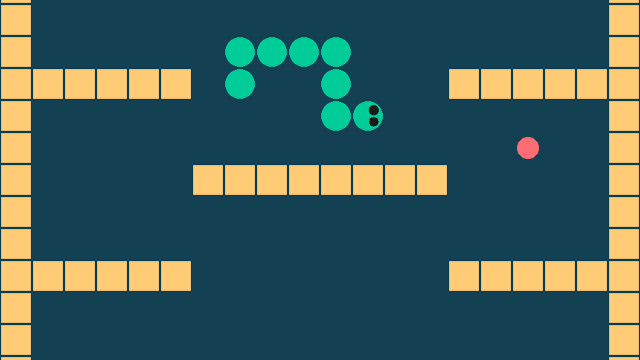
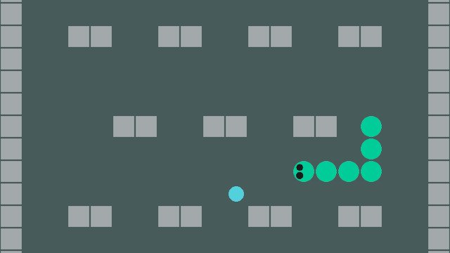

MinSnake
2023
{kind=link}
I made MinSnake in around a week to explore creating a game from scratch in C++ for the first time and getting back into the habit of creating smaller games. Of course, why not start with something as simple as Snake? This game uses just C++ and SDL2, no external assets are used for images or audio, so it is incredibly minimalist. And while I approached the design with minimalism in mind as well, there is actually a bit of variety in themes and level configurations. My mindset was to create a casual game that you might expect to be packaged in early Windows PCs as an office distraction.
The end result I quite like. Though the early levels in the game might be a bit slow for experienced players, the pace picks up. I intentionally wrote the code for this game without consulting material on design patterns or architecture for games (even though I have read quite a bit on this in the past). The goal was to go in fresh and figure out the basics. Levels are hardcoded arrays in structs and were designed directly in the code editor (only possible because they are single screen and simple). The two functions in the codebase I had the most fun with are render_circle and place_new_fruit. For render_circle I got to do fun geometry math to create circles with SDL2's default triangle rendering. place_new_fruit solved the design problem of fruit needing to be placed randomly, but also in a location that was interesting (not too close to the player).
The source code for MinSnake can be found on GitHub here: MinSnake Source Code Repository
 {kind=link}
{kind=link}